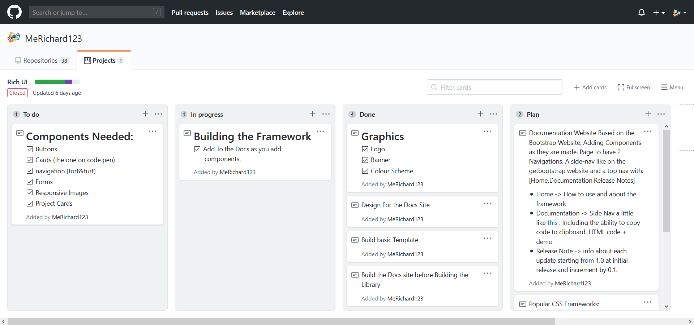

08/06/2020
My Custom CSS framework
A Couple of months ago I watched this video by Web Dev Simplified, where he was suggesting quarantine projects. The one that caught my eye was, as you probably know from the title; a CSS framework. I wanted to talk to you about how I went about building my CSS component library. I know what you're thinking, but it's an opportunity to make yourself stand out as a developer (more on that later).
After the evening of watching the video, my mind was buzzing with ideas: buttons, colours, SCSS, documentation, the whole nine yards. The day after I asked as few developer friends what the name should be. Collectively we came up with Rich UI .
Starting the plan
I later got to work designing the documentation. Later I used GitHub's project Trello board to organise everything I needed to get done. I marked out the Logo and all the components I needed. I wanted to collect all the components I always use across all my projects. This allows you to focus on the important parts rather than the repetitive ones. For example, let's say you are building something huge like an e-commerce site; just imagine how much time you will save by having premade all the components that you love.
I soon realised the scale of this undertaking; I needed some way to make it downloadable I needed all sorts of buttons, cards and easily understood class names. I started by building the basic template for the full site and then added the components as I made them. While doing all this I was looking at many different CSS frameworks to see what they all had in common, this was simple things such as component types, download links a features section... I looked at lots of different frameworks for inspiration to list a few:
My personal favourite was UI Mini because of its simplicity and aesthetic style. Almost every CSS Framework/ component library had a landing page containing a 'Download' and a 'Get Started' call to action. The 'Get Started' would take you to the Docs and the Download would tell you how to download it.
Secondly, a lot of them had some sort of card section that lists the benefits of their framework. They all have the all too familiar documentation section, with a fancy sidebar. Each had a section listing 'big' sites that have used their framework and a series of changes they have made over the years. Just think for a second all these frameworks that hundreds rely on all mildly based of off each other. How can you stand out? How can you make something that isn't bootstrap that isn't a WordPress theme? Don't get me wrong I sometimes use BootStrap myself, but even little things make you stand out when it comes to UX; that little hover animation that took you four hours, it was worth it.
Conclusion
If you want to build your very own framework or component library, I recommend taking it slowly. Plan out every single component you want even draw them if you need. Think of a name, do you want a documentation site? Think of a design. Make a list of everything you need: banner, logo, colour scheme, buttons... This list may be very long but I promise you once you take it slowly, taking the time to enjoy the process it will feel amazing to start ticking everything off.